9월 2일부터 4일까지 사흘간 부산 벡스코 제1전시장은 안전산업의 미래를 확인하려는 관람객들로 북적였다. 국내 최대 규모의 안전산업 전문 박람회, ‘2026 대한민국 안전산업박람회’ 현장이다. 2015년 시작해 올해로 12회째를 맞은 이번 박람회에는 10개국 340개 기업·기관이 참여해 920개 부스를 선보였고, 사흘간 3만 5,532명이 다녀갔다. 비즈니스 상담과 상담액은 지난해 규모를 크게 웃돌았다. ‘첨단 기술의 융합, 안전의 미래’를 주제로 펼쳐진 현장 속으로 안내한다.
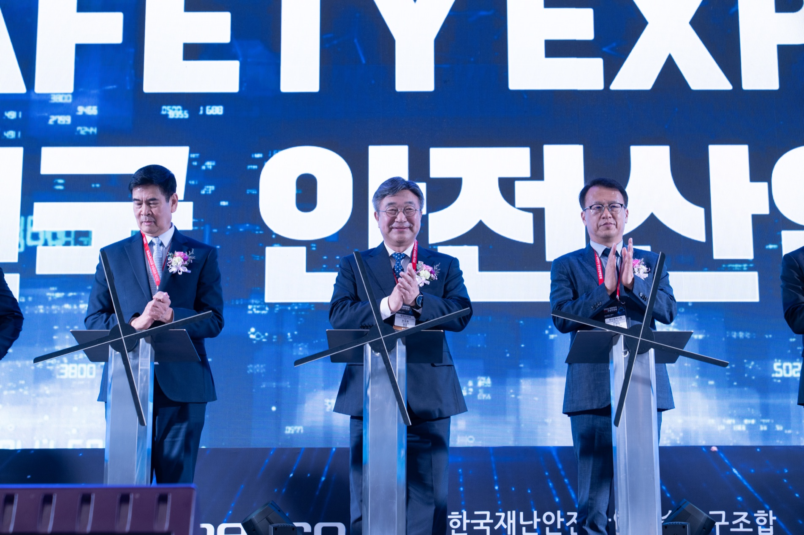
‘2026 대한민국 안전산업박람회’ 숫자로 확인한 사흘간의 성과
10개국 340개사
920부스 규모
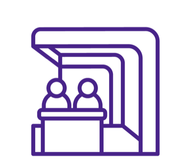
3만 5,532명
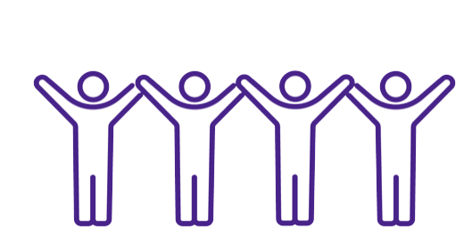
87개 재난안전기업 참여
(상담) 444건
(상담액) 270억원
331개 재난안전기업 참여
(상담) 1,024건
(상담액) 3,961억원
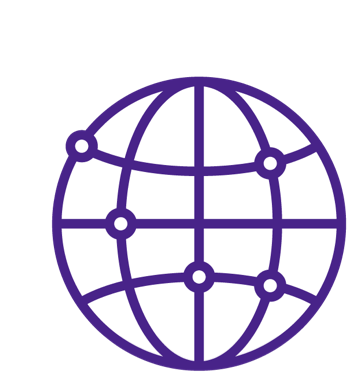
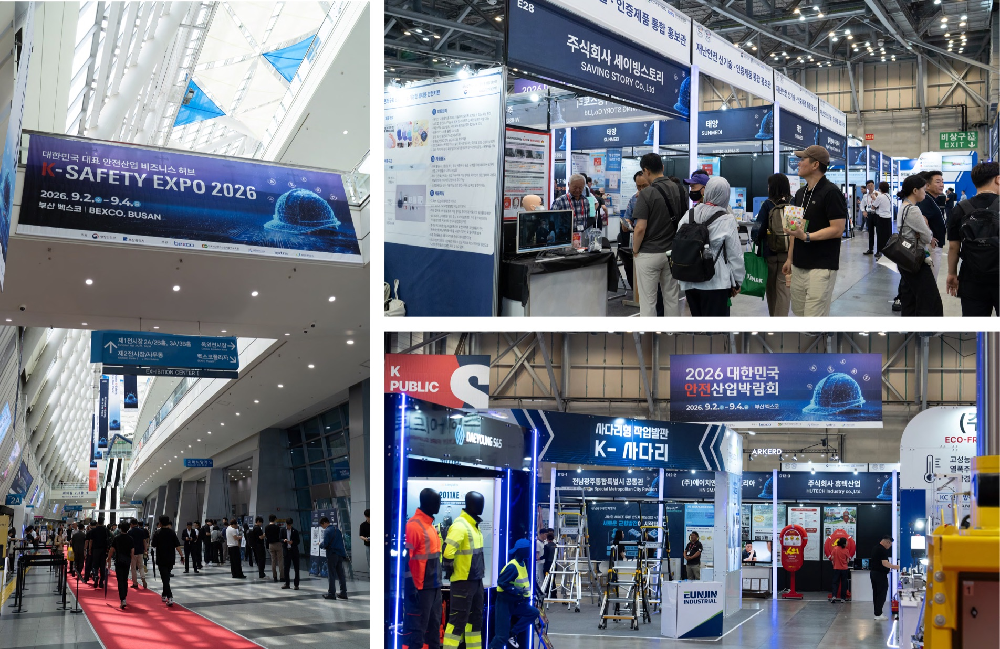
‘2026 대한민국 안전산업박람회’ 숫자로 확인한 사흘간의 성과
첨단안전·공공안전·6대 재난안전 등 네 가지 테마
전시장은 첨단안전산업관, 공공안전산업관, 재난분야별 안전산업관, 글로벌기업관 등 네 개 전시관으로 구성됐다. 입구에 자리한 ‘첨단재난안전산업관’에는 131개사, 256개 부스가 들어서 인공지능 기반 실시간 도시 침수 예측 플랫폼(한국과학기술정보연구원), 산업·소방용 안전점검 로봇(한국로봇융합연구원), 실내 점검용 초소형 드론(리베라웨어) 등 다양한 기술을 선보였다.
‘글로벌기업존’에서는 일본·중국·독일 등 9개국 22개사가 참여해 각국의 최신 안전기술을 소개했다. 이와 함께 자연재난, 화재, 산업안전, 교통·해양안전 등 6개 분야로 구성된 안전산업관과 서울·부산·대전·울산·경남 등 지역 공공부문 전시관도 마련돼 다양한 안전정책과 기술을 한자리에서 살펴볼 수 있었다.
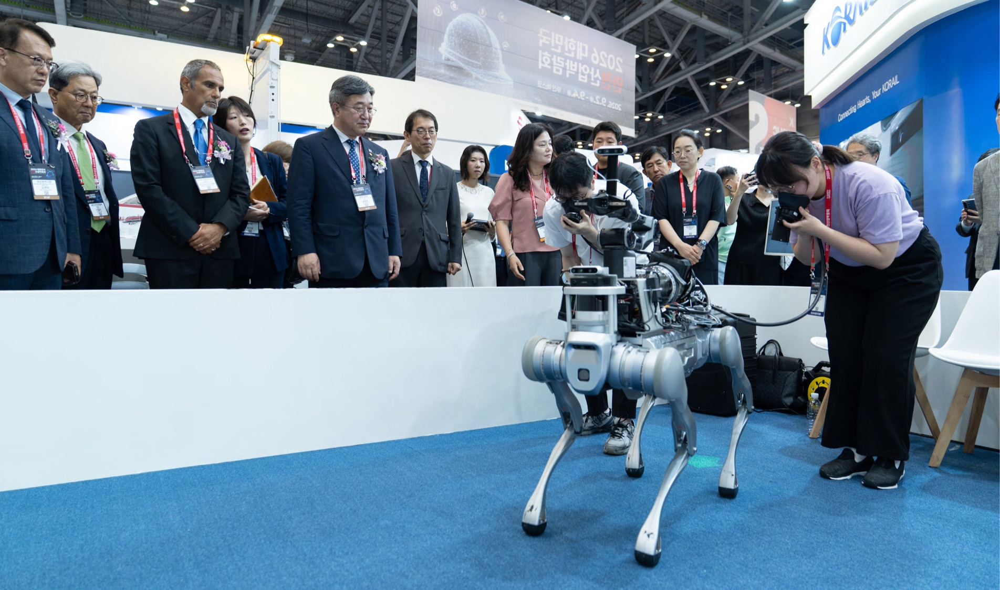
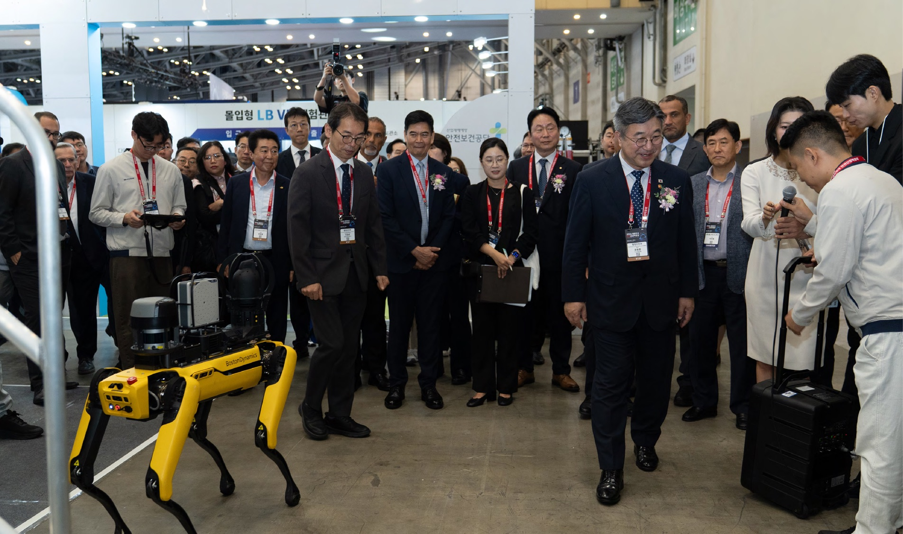
눈으로 보고 몸으로 익히는 안전
전시장 한편에는 ‘안전체험존’도 마련됐다. 현대자동차가 운영한 이동형 안전체험차량에서는 끼임·감전 사고 상황을 직접 체험하고 심폐소생술을 실습하는 프로그램이 진행됐다. 산업안전과 안전운전을 주제로 한 가상현실(VR) 체험도 이어졌다. 한국도로공사의 차량 전복사고 체험 시설에서는 실제 사고 상황을 간접적으로 경험하며 안전의 중요성을 체감할 수 있었다. 기술을 눈으로 확인하는 데 그치지 않고 직접 몸으로 경험하며 안전의 의미를 익히는 공간이었다.
상담장에 모인 열기, 세계 시장을 향한 비즈니스의 장
전시장 한편에 마련된 상담장 역시 사흘 내내 분주했다. 해외바이어 100개사와 국내바이어 84개사가 참가 기업들과 1:1 맞춤 상담을 진행하며 수출과 구매 계약을 논의했다. 올해 사흘간의 행사에서 재난안전기업 331개사가 해외 바이어와 진행한 상담은 모두 1,024건, 계약추진액은 3,961억 원에 달했다. 국내 상담에서도 재난안전기업 87개사가 444건의 상담을 통해 270억 원 규모의 거래를 논의했다.
비즈니스 상담은 해외와 국내를 합쳐 1,468건으로 지난해 1,100여 건보다 1.5배 가까이 늘었다. 계약추진액 역시 4,231억 원으로 지난해 약 3,700억 원을 크게 웃돌았다. 이번 박람회의 실질적인 성과로 안전산업의 성장 가능성을 확인한 사흘이었다.
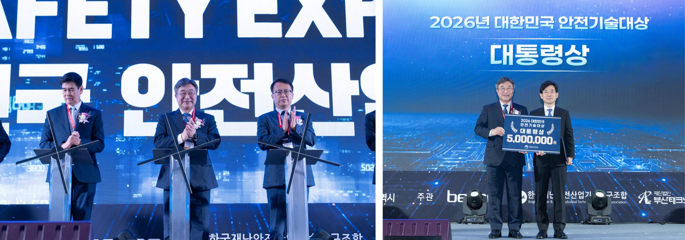
개막식에서 만난 안전기술의 미래
윤호중 행정안전부 장관은 9월 2일 열린 개막식에서 “안전은 국가가 지켜야 할 기본적 가치인 동시에 대한민국의 새로운 성장동력으로 키워야 할 산업”이라며 “이번 박람회를 통해 첨단 기술을 보유한 우리 기업들이 세계 시장으로 도약하기를 바란다”고 말했다.
개막식에서는 다양한 안전 분야 시상식도 함께 진행됐다. 행정안전부는 우수 재난안전 기술을 선정하는 ‘2026 대한민국 안전기술대상’을 비롯해 국민의 아이디어로 생활 속 안전 문제를 해결하는 ‘2026 생활안전 R&D 아이디어 공모전’, 재난안전 현장에서 활용 가능한 지자체 공무원의 아이디어를 발굴하는 ‘2026년 재난·안전 직무발명 아이디어 공모전’, 재난·안전관리 분야 연구자에게 수여하는 ‘2026년 대한민국 재난안전연구개발 대상’을 시상했다.
2015년 시작해 올해 12회째를 맞은 안전기술대상은 서면심사와 국민 참여 온라인 심사를 거쳐 최종 8점을 선정했다. 대통령상은 AI 카메라로 사람을 감지해 0.25초 만에 위험 설비를 멈추는 오토아이티의 ‘HDS(AI 기반 인체감지 안전관리 시스템)’가, 국무총리상은 드론과 수상로봇을 결합해 해양 부유물 위험에 대응하는 해양환경공단의 통합관제 시스템이 차지했다. 수상자들에게는 상금과 더불어 신용·기술보증 우대, ‘안전산업24’ 등록 등 다각적인 지원이 함께 제공된다.
박람회를 넘어선 국제 교류의 장
이번 박람회는 국내외 안전산업 관계자들이 교류하고 최신 기술과 정책을 공유하는 자리이기도 했다. 국가재난안전교육원은 아세안 9개 회원국의 재난관리 교육훈련기관장과 국·과장급 공무원 등 17명을 초청해 ‘아세안 재난관리 역량강화과정’을 운영, 연수생들은 박람회장을 찾아 최신 안전산업 기술과 동향을 살펴보고 수출상담회에도 참여했다. 박람회 기간 열린 ‘1일 컨퍼런스’에서는 AI 재난 예측, 디지털 트윈 시뮬레이션, 긴급재난문자(CBS) 등 우리나라의 첨단 재난관리 기술을 함께 살펴보고 각국의 적용 가능성을 논의했다.
국립재난안전연구원은 ‘기후재난 시대, 지역사회 안전을 묻다’를 주제로 제30회 재난안전세미나를 개최했다. 1996년 방재행정세미나로 시작해 30년을 이어온 세미나의 역사를 돌아보는 한편, 기후위기 시대에 중앙정부와 지역사회가 함께 만들어가야 할 예방 중심의 재난대응 방안을 모색했다. 이 밖에도 42개의 학술·전문 컨퍼런스가 열려 2,780명이 참여했고, 해외 바이어와 참가사 관계자 24개사는 산업시찰 투어에 참여해 국내 안전산업 현장을 직접 둘러보기도 했다.
‘2026 대한민국 안전산업박람회’ 현장에서 만난 기업들
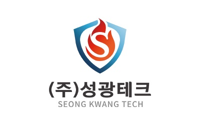
㈜성광테크‘산업·소방·선박용 방열복’성광테크는 방열복 제조 전문기업으로, 산업용 방열복 분야에서만 국내 최다인 100여 건의 인증을 보유하고 있으며 소방용과 선박용 방열복 성능 인증까지 더해 국내에서 가능한 3가지 인증을 모두 갖췄다. 원단 개발부터 생산까지 OEM 과정 없이 국내에서 전 과정을 소화하는 유일한 기업으로, 자체 시험 장비를 통해 출고 전 모든 제품의 품질을 검증하고 있다.
www.skltd.kr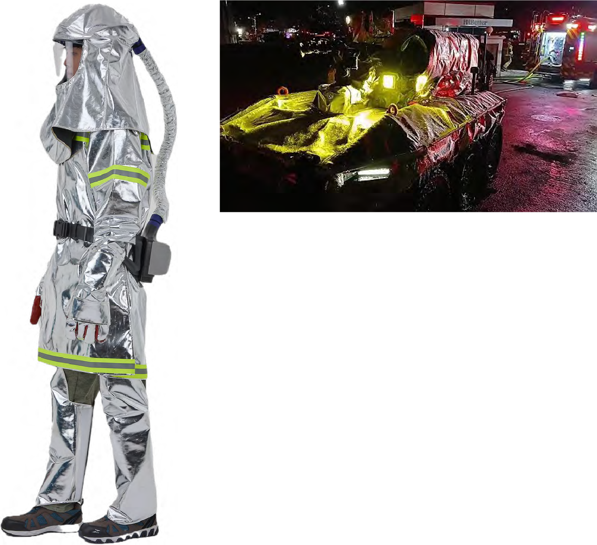
파워원시스템은 전기·전자·전력 분야 기술력을 바탕으로 발전소와 변전소, 산업 플랜트에 스마트 안전·진단 솔루션을 공급하는 기업이다. 협동 로봇 기반의 ‘MUTO-S’는 자율주행(AMR)과 6축 로봇 암, 3D 비전, 열화상 카메라 기술을 융합해 작업 위치까지 스스로 이동한 뒤 판넬 도어를 열고 내부 상태를 실시간으로 진단한다. 기존 천장 레일 카메라 방식의 설치·유지보수 한계를 극복하고 AI 기반 영상 분석을 더해 전기실 안전관리의 무인화를 끌어올렸다.
pnsholdings.co.kr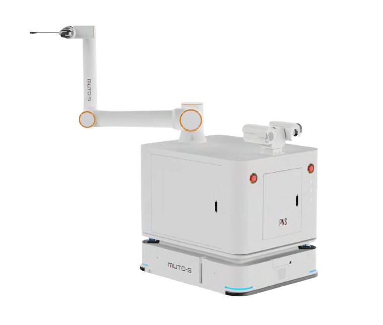
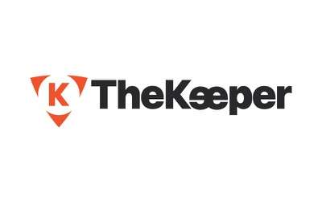
㈜더키퍼‘전기차 화재 극초기 감지·대응 시스템’더키퍼는 AI 관제 기반의 전기차 화재 극초기 감지·대응 솔루션 전문기업이다. 기존 CCTV 영상과 연동해 별도 카메라 없이 배터리 열폭주 징후를 실시간으로 감지하는 AI 화재 감지 소프트웨어와, 주차장 바닥에서 전기차 하부 배터리에 직접 방수해 초기 냉각·진압을 돕는 고정식 하부 스프링클러를 함께 개발했다. 감지부터 관제, 초기 대응까지 하나로 연동되는 이 통합 인프라는 CES 2026 혁신상을 수상했으며, 현재 경기아트센터와 롯데홈쇼핑에 도입돼 있다.
www.thekeeper.co.kr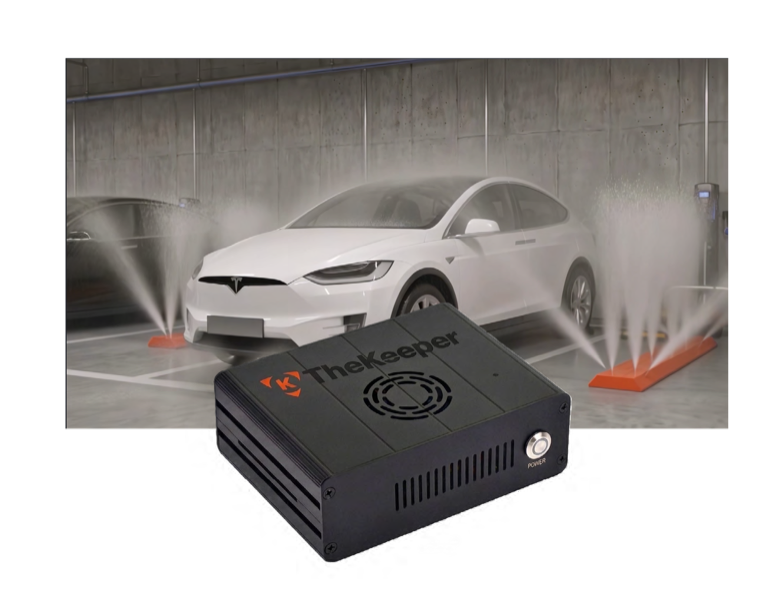
신호테크와 에이엠텍이 함께 선보인 로보트랙은 홍수와 산불, 인명 구조 등 극한 환경에 특화된 재난대응형 로봇 브랜드다. 침수 현장에 투입돼 대용량으로 배수하는 펌프 로봇, 산악 지형에서 좌우로 회전하며 산불을 진화하는 다목적 로봇, 갯벌 고립 사고 시 사람 대신 투입되는 인명구조 로봇, 전기차·배터리 화재에 특화된 소형 소방 로봇 등 재난 유형별 로봇 라인업을 갖췄다. 전동과 엔진 등 다양한 동력 시스템을 적용해 사람이 접근하기 어려운 위험 환경에서도 효율적으로 작업할 수 있다는 점이 특징이다.
www.craneboom.kr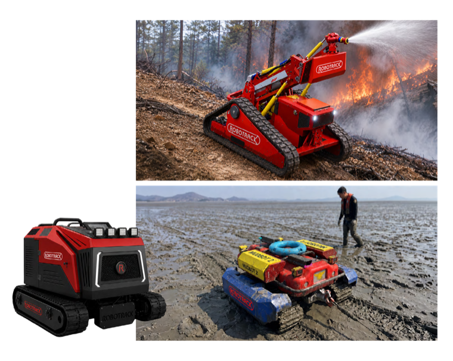
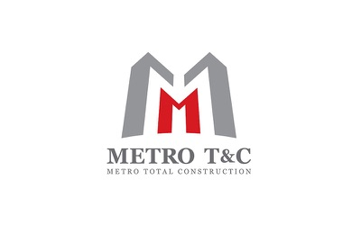
메트로티엔씨(주)하이브리드 감쇠장치·고차모드형 좌굴방지가새(BRB)’메트로티엔씨는 지진 재해로부터 건축물의 안전성을 지키는 내진·구조보강 전문 엔지니어링 건설사다. 대형 건축물과 학교, 의료시설 등에서 쌓은 실적을 바탕으로 내진성능평가부터 보강설계, 시공까지 원스톱 솔루션을 제공한다. 재난안전제품과 혁신제품으로 각각 지정된 하이브리드 감쇠장치와 고차모드형 좌굴방지가새(BRB)는 건물의 강성과 강도를 높이고 지진 에너지를 정밀하게 흡수·제어해, 대형 지진에도 구조물의 변형과 손상을 최소화한다.
www.metrotnc.co.kr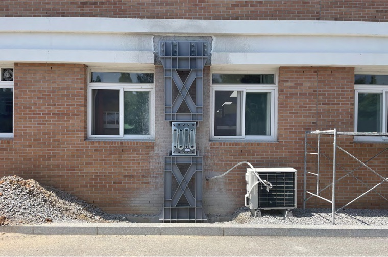
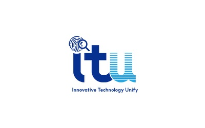
㈜아이티유‘산업안전 통합모니터링 솔루션’아이티유는 IoT와 인공지능(AI) 기술을 기반으로 산업현장의 위험 요소를 실시간으로 감지·예측하는 ‘올인원 통합안전모니터링 솔루션’을 자체 개발·운영한다. 기획과 하드웨어 설계, 소프트웨어 개발, 영상감시시스템 구축, 유지보수까지 전 과정을 하나로 아우르는 End-to-End 체계를 갖췄다. 복합가스감지기와 이동형 카메라, 변위 측정 시스템, 세이프 비콘 등 현장 특성에 맞춘 세부 장비들이 하나의 통합 대시보드로 연동돼, 이상 상황 발생 시 즉각적인 경보와 신속한 대응을 지원한다.
www.itu.kr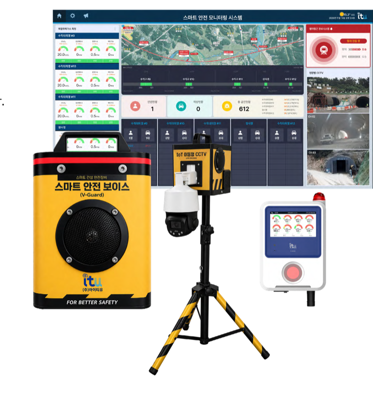